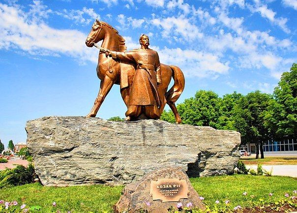
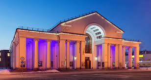
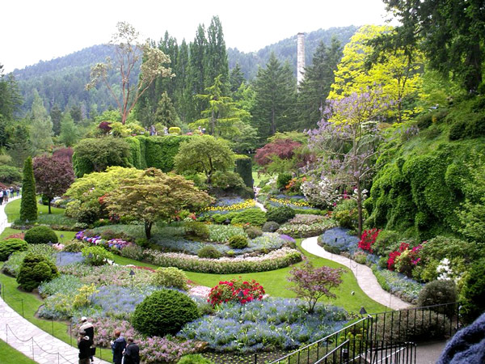
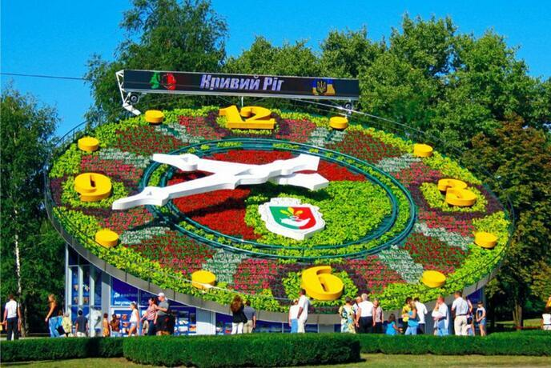
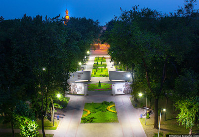
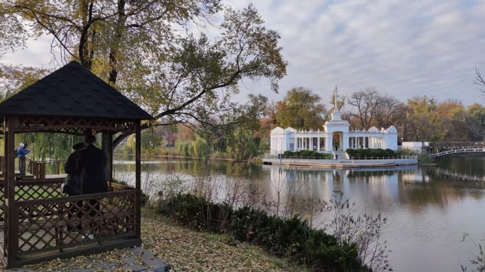

Двоповерхова будівля виконана в стилі «сталінська неокласика», цегляна, тинькована, з портиком
іонійського ордера, фасади пофарбовані у сталево-сірий колір. Споруда прикрашена 28 колонами круглого
перерізу з капітелями іонічного ордеру: головний фасад — по 5 з кожного боку від центрального входу,
зліва та справа — по 9, а також 6 колонами прямокутного перерізу з капітелями тосканського ордеру:
головний фасад — по 3 з кожного боку від центрального входу.
У приміщенні театру діє один великий
зал для глядачів, який розрахований на 644 місця.
Кривий Ріг — місто в Україні, у Дніпропетровській області. Восьме за населенням та друге за площею місто України. Є найдовшим містом Європи , протяжність з півночі на південь 126 км.
Розташований на березі річок Інгулець і Саксагань, Кривий Ріг був заснований у 1775 році козаками.
Символіка міста
Цікаві місця, які варто відвідати
-
Пам'ятник «Козак Ріг»
Скульптурна композиція зображує момент сходження козака Рога з коня біля місця впадіння річки Саксагань у Інгулець. Скульптури виготовлені з бронзи, та встановлено на постаменті з брили залізної руди, яку незадовго до відкриття пам'ятника доставили з кар'єру підприємства «АрселорМіттал Кривий Ріг» на місце призначення. Вага постаменту становить близько 62 тон, а вага власне скульптури — 3 тони. Загальна висота пам'ятника разом з постаментом — 5 м 30 см.
-
Криворізький театр драми та музичної комедії імені Т. Г. Шевченка
 -
Криворізький ботанічний сад НАН України
Сад є державною, бюджетною, неприбутковою науковою установою, яка створена для організації творчої роботи колективу вчених і вирішення актуальних проблем розвитку фундаментальних та прикладних досліджень в галузі біологічної науки. Сучасна площа 52,4 га. Перебуває у віданні Національної Академії наук України. Ботанічний сад є об'єктом природно-заповідного фонду України загальнодержавного значення. З 2004 року, згідно з розпорядженням Кабінету Міністрів, колекція деревних і чагарникових рослин (дендрарій) визнана національним надбанням України.
-
Криворізький квітковий годинник
Споруда незвичайної архітектури і краси з діаметром циферблату 22 метри та довжиною хвилинної стрілки - 12 метрів. Це найбільший квітковий годинник в світі. Циферблат годинника представляє собою бетонне коло, яке складається з 12 секторів висаджених 22 тис. квітів шести видів. Хід стрілки забезпечує часовий механізм, розташований під спорудою.
-
Парк Героїв
Парк Героїв в Кривому Розі - невеликий затишний парк в Металургійному районі міста. На території парку розташовуються Стела Героїв (відкрита в липні 1971 року народження, в 2013 році перенесена в сквер за пам'ятником «Перемога»); Пам'ятник воїнам-інтернаціоналістам (у 2013 році перенесений в сквер за пам'ятником «Перемога»).
-
Гданцівський парк
Паркові 82 роки. Він розташований в Центрально-Міському районі Кривого Рогу. Масштабна реконструкція парку на річці Інгулець була проведена в 2020 році. Тут з'явилися акуратно вимощені доріжки, алеї, клумби, дитячі майданчики для ігор.